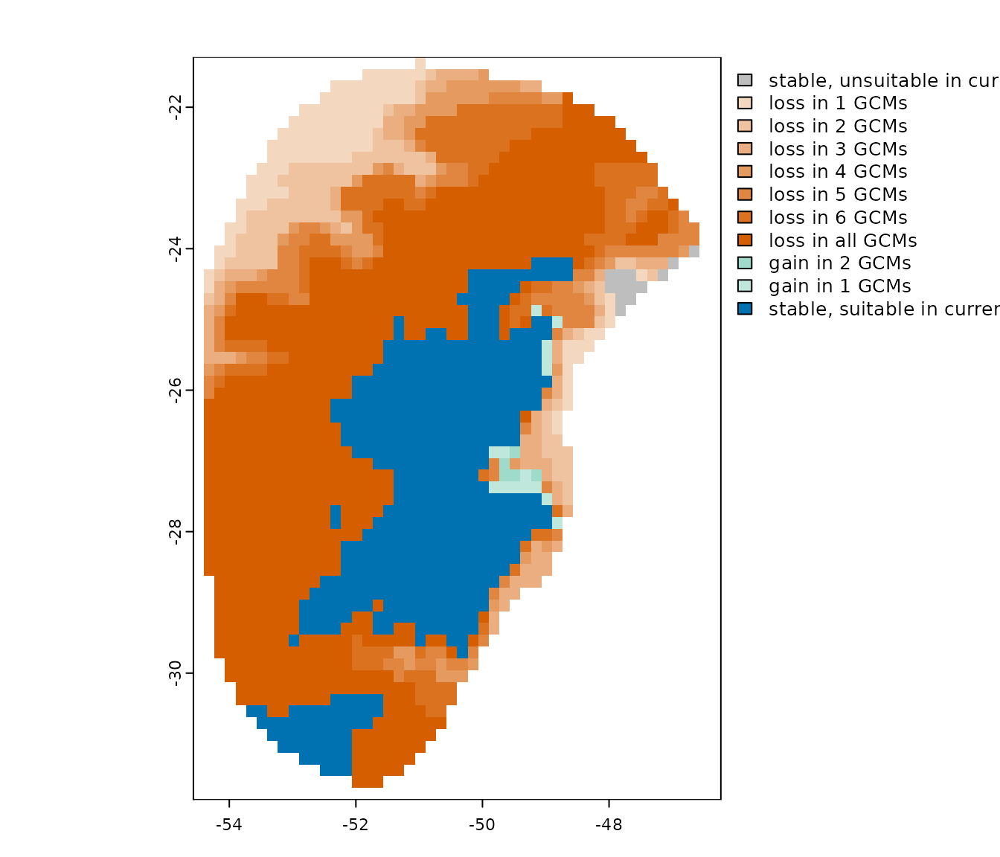

Organize projections manually: An example with LGM from CHELSA
Source:vignettes/organize_past_chelsa.Rmd
organize_past_chelsa.RmdIntroduction
In the “Project models to multiple
scenarios” vignette, we show how to predict the models to multiple
scenarios at once. We used as example the future scenarios available in
WorldClim,
which have an specific function (organize_future_worldclim)
to organize the files in the specific hierarchical manner compatible
with kuenm2.
Specifically, we need a root directory containing nested folders representing different scenarios, with the raster variables stored within. At the first level inside the root folder, subfolders should correspond to distinct time periods (e.g., future years like “2070” or “2100,” or past periods such as “Mid-holocene” or “LGM”). Within each period folder, if applicable, you should include subfolders for each emission scenario (e.g., “ssp126”, “ssp585”). Finally, within each emission scenario or time period folder, you need to include a separate folder for each General Circulation Model (GCM) (e.g., “BCC-CSM2-MR”, “MIROC6”)
Here, we will show how to organize the files manually, making possible to project the models using scenarios available in different sources. As example, we will use the variables from CHELSA representing scenarios of the Last Glacial Maximum (LGM, 21,000 year ago).
Standardize Raster File Names for Model Projections
Before using the organize_for_projection() function, the climate variables must first be saved as separate .tif files — one file per scenario. Filenames should follow a consistent pattern that clearly indicates the time period, GCM, and, for future scenarios, the emission scenario (SSP). For example:
A file representing past conditions for the “LGM” period using the “MIROC6” GCM should be named: “Past_LGM_MIROC6.tif”
A file representing future conditions for the period “2081–2100” under the emission scenario “ssp585” and the GCM “ACCESS-CM2” should be named: “Future_2081-2100_ssp585_ACCESS-CM2.tif”
All scenario files must contain the same variable names (e.g., bio1, bio2, etc.) and units as those used during model calibration.
Let’s see how to achieve this in practice.
Getting variables from CHELSA
Download variables from LGM
The first step is downloading the variables representing LGM condition from CHELSA. You can download the files directly from this link, or follow the script below. We need to specify a folder to save the variables, the General Circulation Models (GCMs) and the variables:
# Define variables to download
var_to_use <- c("BIO_01", "BIO_07", "BIO_12", "BIO_15")
# Define GCMs
gcms <- c("CCSM4", "CNRM-CM5", "FGOALS-g2", "IPSL-CM5A-LR", "MIROC-ESM",
"MPI-ESM-P", "MRI-CGCM3")
# Create a grid combining variables and GCMs
g <- expand.grid("gcm" = gcms, "var" = var_to_use)
# Create links to download
l <- sapply(1:nrow(g), function(i){
gcm_i <- g$gcm[i]
var_i <- g$var[i]
#Create link to download
l_i <- paste0("https://os.zhdk.cloud.switch.ch/chelsav1/pmip3/bioclim/CHELSA_PMIP_",
gcm_i, "_", var_i, ".tif")
})
# See links
head(l)
#> [1] "https://os.zhdk.cloud.switch.ch/chelsav1/pmip3/bioclim/CHELSA_PMIP_CCSM4_BIO_01.tif"
#> [2] "https://os.zhdk.cloud.switch.ch/chelsav1/pmip3/bioclim/CHELSA_PMIP_CNRM-CM5_BIO_01.tif"
#> [3] "https://os.zhdk.cloud.switch.ch/chelsav1/pmip3/bioclim/CHELSA_PMIP_FGOALS-g2_BIO_01.tif"
#> [4] "https://os.zhdk.cloud.switch.ch/chelsav1/pmip3/bioclim/CHELSA_PMIP_IPSL-CM5A-LR_BIO_01.tif"
#> [5] "https://os.zhdk.cloud.switch.ch/chelsav1/pmip3/bioclim/CHELSA_PMIP_MIROC-ESM_BIO_01.tif"
#> [6] "https://os.zhdk.cloud.switch.ch/chelsav1/pmip3/bioclim/CHELSA_PMIP_MPI-ESM-P_BIO_01.tif"
# Create a directory to save the raw variables
raw_past_chelsa <- file.path(tempdir(), "Raw_past") #Here, in a temporary directory
dir.create(raw_past_chelsa)
# Download files and save in the Raw_past directory
options(timeout = 300) #For avoiding errors with timeout
sapply(l, function(i){
#Donwload only if the file has not been downloaded yet
if(!file.exists(file.path(raw_past_chelsa, basename(i))))
download.file(url = i,
destfile = file.path(raw_past_chelsa, basename(i)),
method = "curl")
}) #It will take a while
#Check the files in the Raw_past
list.files(raw_past_chelsa)
#> [1] "CHELSA_PMIP_CCSM4_BIO_01.tif" "CHELSA_PMIP_CCSM4_BIO_07.tif"
#> [3] "CHELSA_PMIP_CCSM4_BIO_12.tif" "CHELSA_PMIP_CCSM4_BIO_15.tif"
#> [5] "CHELSA_PMIP_CNRM-CM5_BIO_01.tif" "CHELSA_PMIP_CNRM-CM5_BIO_07.tif"
#> [7] "CHELSA_PMIP_CNRM-CM5_BIO_12.tif" "CHELSA_PMIP_CNRM-CM5_BIO_15.tif"
#> [9] "CHELSA_PMIP_FGOALS-g2_BIO_01.tif" "CHELSA_PMIP_FGOALS-g2_BIO_07.tif"
#> [11] "CHELSA_PMIP_FGOALS-g2_BIO_12.tif" "CHELSA_PMIP_FGOALS-g2_BIO_15.tif"
#> [13] "CHELSA_PMIP_IPSL-CM5A-LR_BIO_01.tif" "CHELSA_PMIP_IPSL-CM5A-LR_BIO_07.tif"
#> [15] "CHELSA_PMIP_IPSL-CM5A-LR_BIO_12.tif" "CHELSA_PMIP_IPSL-CM5A-LR_BIO_15.tif"
#> [17] "CHELSA_PMIP_MIROC-ESM_BIO_01.tif" "CHELSA_PMIP_MIROC-ESM_BIO_07.tif"
#> [19] "CHELSA_PMIP_MIROC-ESM_BIO_12.tif" "CHELSA_PMIP_MIROC-ESM_BIO_15.tif"
#> [21] "CHELSA_PMIP_MPI-ESM-P_BIO_01.tif" "CHELSA_PMIP_MPI-ESM-P_BIO_07.tif"
#> [23] "CHELSA_PMIP_MPI-ESM-P_BIO_12.tif" "CHELSA_PMIP_MPI-ESM-P_BIO_15.tif"
#> [25] "CHELSA_PMIP_MRI-CGCM3_BIO_01.tif" "CHELSA_PMIP_MRI-CGCM3_BIO_07.tif"
#> [27] "CHELSA_PMIP_MRI-CGCM3_BIO_12.tif" "CHELSA_PMIP_MRI-CGCM3_BIO_15.tif"Download variables from Current Period
We also need the variables representing current conditions (1981-2010) from CHELSA. You can download the files directly from this link, or follow the script below:
#Create directory to save tha variables
present_dir <- file.path(tempdir(), "Present_raw")
dir.create(present_dir)
#Define variables to download
var_present <- c("bio1", "bio7", "bio12", "bio15")
#Create links, download and save in the Present_raw directory
l_present <- sapply(var_present, function(i){
#Create link to download
l_present_i <- paste0("https://os.zhdk.cloud.switch.ch/chelsav2/GLOBAL/climatologies/1981-2010/bio/CHELSA_", i, "_1981-2010_V.2.1.tif")
#Donwload only if the file has not been downloaded yet
if(!file.exists(file.path(present_dir, basename(l_present_i))))
download.file(url = l_present_i,
destfile = file.path(present_dir, basename(l_present_i)),
method = "curl")
}) #It will take a while
#Check the files in the directory
list.files(present_dir)
#> [1] "CHELSA_bio1_1981-2010_V.2.1.tif" "CHELSA_bio12_1981-2010_V.2.1.tif"
#> [3] "CHELSA_bio15_1981-2010_V.2.1.tif" "CHELSA_bio7_1981-2010_V.2.1.tif"Merge and Rename Variables from the Same Scenario
After downloading the files, we need to merge the variables in a
single SpatRaster for each scenario. In general, past
scenarios differs only in terms of GCM, while future scenarios are
characterized by different emission scenarios (i.e., SSP1-26 and
SSP5-85) and GCMs.
First, let’s merge the variables from the present scenarios. To speed up the analysis in this example, we will also resample the rasters from 30 arc-seconds to 10 arc-minutes, and crop the variables using a calibration area (M), which is provided as example in the package and it was defined by drawing a minimum convex polygons around the species’ occurrences and added a buffer of 300km.
We will also rename the variables to the pattern “bio1”, “bio12”, “bio15”, and “bio7”.
#Load package
library(terra)
# Import M
m <- terra::vect(system.file("extdata", "m.gpkg",
package = "kuenm2"))
# Import present variables
present_files <- list.files(present_dir, full.names = TRUE) #List files
present_var <- rast(present_files)
#Mask variables using the calibration area (m)
present_m <- crop(present_var, m, mask = TRUE)
# Check variables names
names(present_m)
#> [1] "CHELSA_bio1_1981-2010_V.2.1" "CHELSA_bio12_1981-2010_V.2.1"
#> [3] "CHELSA_bio15_1981-2010_V.2.1" "CHELSA_bio7_1981-2010_V.2.1"
# Rename variables
names(present_m) <- c("bio1", "bio12", "bio15", "bio7")
names(present_m)
#> [1] "bio1" "bio12" "bio15" "bio7"
# Check current resolution (30arc-sec)
res(present_m)
#> [1] 0.008333333 0.008333333
#Decrease resolution to 10arc-min
present_chelsa <- aggregate(present_m, fact = 20, fun = "mean")
#Save processed raster
dir_current <- file.path(tempdir(), "Current_CHELSA")
dir.create(dir_current)
writeRaster(present_chelsa, filename = file.path(dir_current, "Current_CHELSA.tif"))Now, let’s do the same thing with variables representing LGM
conditions, starting by masking the variables using the m
and resampling to 10arc-min:
# Import LGM variables
lgm_files <- list.files(raw_past_chelsa, full.names = TRUE) #List files
lgm_var <- rast(lgm_files)
#Mask variables using the calibration area (m)
lgm_m <- crop(lgm_var, m, mask = TRUE)
#Decrease resolution to 10arc-min
lgm_chelsa <- aggregate(lgm_m, fact = 20, fun = "mean")
#Check variables names
names(lgm_chelsa)
#> [1] "CHELSA_PMIP_CCSM4_BIO_01" "CHELSA_PMIP_CCSM4_BIO_07"
#> [3] "CHELSA_PMIP_CCSM4_BIO_12" "CHELSA_PMIP_CCSM4_BIO_15"
#> [5] "CHELSA_PMIP_CNRM-CM5_BIO_01" "CHELSA_PMIP_CNRM-CM5_BIO_07"
#> [7] "CHELSA_PMIP_CNRM-CM5_BIO_12" "CHELSA_PMIP_CNRM-CM5_BIO_15"
#> [9] "CHELSA_PMIP_FGOALS-g2_BIO_01" "CHELSA_PMIP_FGOALS-g2_BIO_07"
#> [11] "CHELSA_PMIP_FGOALS-g2_BIO_12" "CHELSA_PMIP_FGOALS-g2_BIO_15"
#> [13] "CHELSA_PMIP_IPSL-CM5A-LR_BIO_01" "CHELSA_PMIP_IPSL-CM5A-LR_BIO_07"
#> [15] "CHELSA_PMIP_IPSL-CM5A-LR_BIO_12" "CHELSA_PMIP_IPSL-CM5A-LR_BIO_15"
#> [17] "CHELSA_PMIP_MIROC-ESM_BIO_01" "CHELSA_PMIP_MIROC-ESM_BIO_07"
#> [19] "CHELSA_PMIP_MIROC-ESM_BIO_12" "CHELSA_PMIP_MIROC-ESM_BIO_15"
#> [21] "CHELSA_PMIP_MPI-ESM-P_BIO_01" "CHELSA_PMIP_MPI-ESM-P_BIO_07"
#> [23] "CHELSA_PMIP_MPI-ESM-P_BIO_12" "CHELSA_PMIP_MPI-ESM-P_BIO_15"
#> [25] "CHELSA_PMIP_MRI-CGCM3_BIO_01" "CHELSA_PMIP_MRI-CGCM3_BIO_07"
#> [27] "CHELSA_PMIP_MRI-CGCM3_BIO_12" "CHELSA_PMIP_MRI-CGCM3_BIO_15"Note that the variables names contains the same gcms we
used to download. The trick here is using these patterns for grouping
the variables:
# In each iteration, 'i' is a GCM
lgm_by_gcm <- lapply(gcms, function(i){
#Subset variables that belong to GCM i
lgm_gcm_i <- lgm_chelsa[[grepl(i, names(lgm_chelsa))]]
#Rename variables
names(lgm_gcm_i) <- c("bio1", "bio7", "bio12", "bio15")
return(lgm_gcm_i)
})
names(lgm_by_gcm) <- gcmsOne important thing to note is that the Technical Specifications of CHELSA specifies that the variables from LGM have different units than the current ones. In the current time, bio_1 have values in ºC, while in the LGM it has values in K * 10. bio_7 have values in ºC in the current time and in ºC * 10 in LGM. The current precipitation variables are in milimeters (mm) or percentage of variation (bio_15), while in the LGM they are in mm * 10 or % * 10. Yes, it’s a mess.
# Check units of variables in present
#> minmax(present_chelsa[[c("bio1", "bio7", "bio12", "bio15")]])
#> bio1 bio7 bio12 bio15
#> min 12.87700 10.11300 1211.605 10.32925
#> max 24.70025 21.06125 3063.049 70.45125
# Check units of variables in LGM (CCSM4)
minmax(lgm_by_gcm$CCSM4)
#> bio1 bio7 bio12 bio15
#> min 2822.425 173.5125 10710.62 86.9125
#> max 2946.758 219.7700 23159.20 659.0025We need to convert these variables to they have the same units as the current variables:
lgm_fixed_units <- lapply(lgm_by_gcm, function(x){
x$bio1 <- (x$bio1/10) - 273 #Divide by 10 and subtracts -273 to convert to ºC
x$bio7 <- x$bio7/10 #Divide by 10
x$bio12 <- x$bio12/10 #Divide by 10
x$bio15 <- x$bio15/10 #Divide by 10
return(x)
})
#Check units
minmax(lgm_fixed_units$CCSM4)
#> bio1 bio7 bio12 bio15
#> min 9.24250 17.35125 1071.062 8.69125
#> max 21.67575 21.97700 2315.920 65.90025Now that we have the variables in LGM grouped by scenarios (GCMs), with the same names and same units as in the current variables, we can write the raster to disk. Remember that the filenames must have the time period (LGM) and the GCM of each scenario (for variables representing future scenarios, it also must have the SSPs for emission scenarios):
# Create directory to save processed lgm variables
dir_lgm <- file.path(tempdir(), "LGM_CHELSA")
dir.create(dir_lgm)
# In each iteration, i is one of the GCMs
lapply(names(lgm_fixed_units), function(i){
#Subset spatraster from GCM i
r_i <- lgm_fixed_units[[i]]
#Name the file with the Period (LGM) and GCM (i)
filename_i <- paste0("CHELSA_LGM_", i, ".tif")
#Write Raster
writeRaster(r_i,
filename = file.path(dir_lgm, filename_i))
})Organize and structure variables
At this points you must have:
- The variables stored as TIF files, one file per scenario.
- The names of the raster variables containing patterns to identify the time periods, GCMS and SSPs (in case of future scenarios).
- The variables names (bio1, bio2, etc) of the scenarios with the same names and units as in the current variables used to calibrate the model.
Now, we can use the function organize_for_projection()
to organize the files in the specific hierarchical manner compatible
with kuenm2. The function requires:
-
present_file,past_filesorfuture_files: character vectors with the full path to the variables from the scenarios of interest (present, past or future, respectively). When listing these files, is important to setfull.names = TRUEinlist.files(). -
past_periodand/orfuture_period: character vectors specifing the time periods in past and future, respectively. Examples of past periods are LGM and MID. Examples of future periods includes “2061-2080” or “2100”. Remember these periods needs to be part of the filenames. -
past_gcmand/orfuture_gcm: character vectors specifing the specific GCMS in past and/or future, respectively. Examples of GCMS are “CCSM4”, “CNRM-CM5”, and “FGOALS-g2”. Remember these GCMs needs to be part of the filenames. -
future_pscen: character vectors specifing the specific emission scenarios in the future, respectively. Examples of future_pscen are “ssp126” and “ssp585. Remember these scenarios needs to be part of the filenames. -
variables_namesormodels: a character with the variables names or afitted_modelobject (from where the variables used in the model will be extracted).
The function also allows to use a spatial object
(SpatVector, SpatRaster, or
SpatExtent) to mask the variables, and append static
variables (i.e., topographic variables) to the climatic variables.
Let’s use the organize_for_projection() function to
organize the past variables representing the LGM conditions. The first
step is using the list.files(path, full.names = TRUE to
list the path to the variables representing present and LGM conditions.
Remembering, here we save the processed current variables in the
present_dir directory and the LGM variables in the
dir_lgm:
present_list <- list.files(path = present_dir,
pattern = "Current_CHELSA",
full.names = TRUE)
lgm_list <- list.files(path = dir_lgm,
pattern = "LGM",
full.names = TRUE)Let’s check the listed files to ensure they are storing the full path to the variables of each scenario:
present_list #The paths in your computer will be different
#> "Local\\Temp\\Current_CHELSA.tif"
lgm_list #The paths in your computer will be different
#> [1] "Local\\Temp\\CHELSA_LGM_CCSM4.tif"
#> [2] "Local\\Temp\\CHELSA_LGM_CNRM-CM5.tif"
#> [3] "Local\\Temp\\CHELSA_LGM_FGOALS-g2.tif"
#> [4] "Local\\Temp\\CHELSA_LGM_IPSL-CM5A-LR.tif"
#> [5] "Local\\Temp\\CHELSA_LGM_MIROC-ESM.tif"
#> [6] "Local\\Temp\\CHELSA_LGM_MPI-ESM-P.tif"
#> [7] "Local\\Temp\\CHELSA_LGM_MRI-CGCM3.tif"After check the files, we are ready to organize them:
# Create a directory to save the variables
#Here, in a temporary directory. Change to your work directory in your computer
out_dir <- file.path(tempdir(), "Projection_variables")
organize_for_projection(output_dir = out_dir,
variable_names = c("bio1", "bio7", "bio12", "bio15"),
present_file = present_list,
past_files = lgm_list,
past_period = "LGM",
past_gcm = c("CCSM4", "CNRM-CM5", "FGOALS-g2",
"IPSL-CM5A-LR", "MIROC-ESM", "MPI-ESM-P",
"MRI-CGCM3"),
resample_to_present = TRUE,
overwrite = TRUE)
#>
#> Variables successfully organized in directory:
#> /tmp/RtmpKT0qhA/Projection_variablesWe can check the files structured hierarchically in nested folders
using the dir_tree() function from the fs
package:
#Install package if necessary
if(!require("fs")){
install.packages("fs")
}
dir_tree(out_dir)
#> Local\Temp\Projection_variables
#> ├── Past
#> │ └── LGM
#> │ ├── CCSM4
#> │ │ └── Variables.tif
#> │ ├── CNRM-CM5
#> │ │ └── Variables.tif
#> │ ├── FGOALS-g2
#> │ │ └── Variables.tif
#> │ ├── IPSL-CM5A-LR
#> │ │ └── Variables.tif
#> │ ├── MIROC-ESM
#> │ │ └── Variables.tif
#> │ ├── MPI-ESM-P
#> │ │ └── Variables.tif
#> │ └── MRI-CGCM3
#> │ └── Variables.tif
#> └── Present
#> └── Variables.tifAfter organizing variables, the next step is to create the
prepared_projection object.
But before it, let’s import a fitted_model provided as
data example in the kuenm2 package, which were calibrated
using the current variables from CHELSA used in this example. For more
information on data preparation, model calibration and model exploration, consult the
respective vignetts.
Preparation of data for model projections
Now, let’s prepare data for model projections across multiple scenarios, storing the paths to the rasters representing each scenario. We need the paths to the folders where the raster files are stored. This includes the variables for the present time, which were used to calibrate and fit the models.
In addition to storing the paths to the variables for each scenario,
the function also verifies if all variables used to fit the final models
are available across all scenarios. To perform this check, you need to
provide either the fitted_models object you intend to use
for projection or simply the variable names. We strongly suggest using
the fitted_models object to minimize projection errors.
We also need to define the root directory containing the scenarios for projection (present, past, and/or future), along with additional information regarding time periods, SSPs, and GCMs.
#Define present_dir and past_dir
in_dir_present <- file.path(out_dir, "Present")
in_dir_past <- file.path(out_dir, "Past")
# Prepare projections using fitted models to check variables
pr <- prepare_projection(models = fitted_model_chelsa,
present_dir = in_dir_present, #Directory with present-day variables
past_dir = in_dir_past,
past_period = "LGM",
past_gcm = c("CCSM4", "CNRM-CM5", "FGOALS-g2",
"IPSL-CM5A-LR", "MIROC-ESM", "MPI-ESM-P",
"MRI-CGCM3"),
future_dir = NULL, #NULL because we won't project to the past
future_period = NULL, #NULL because we won't project to the past
future_pscen = NULL, #NULL because we won't project to the past
future_gcm = NULL) #NULL because we won't project to the pastWhen we print the projection_data object, it summarizes
all the scenarios we will predict and also shows the root directory
where the predictor rasters are stored:
pr
#> projection_data object summary
#> ==============================
#> Variables prepared to project models for Present and Past
#> Past projections contain the following periods and GCMs:
#> - Periods: LGM
#> - GCMs: CCSM4 | CNRM-CM5 | FGOALS-g2 | IPSL-CM5A-LR | MIROC-ESM | MPI-ESM-P | MRI-CGCM3
#> All variables are located in the following root directory:
#> Local/Temp/Projection_variablesProject selected models to multiple scenarios
After preparing the data, we can use the
project_selected() function to predict the selected models
across the multiple scenarios specified in
prepare_projections. For a comprehensive detail on this
step, please see the Project models to
multiple scenarios vignette.
## Create a folder to save projection results
#Here, in a temporary directory
out_dir_projections <- file.path(tempdir(), "Projection_results/chelsa")
dir.create(out_dir_projections, recursive = TRUE)
## Project selected models to multiple scenarios
p <- project_selected(models = fitted_model_chelsa,
projection_data = pr,
out_dir = out_dir_projections,
write_replicates = TRUE,
progress_bar = FALSE, overwrite = T) #Do not print progress bar
#Import mean of each projected scenario
p_mean <- import_projections(projection = p, consensus = "mean")
#Plot all scenarios
plot(p_mean, cex.main = 0.8)
Compute changes
When projecting a niche model to different temporal scenarios (past or future), species’ areas can be classified into three categories relative to the current baseline: gain, loss and stability. The interpretation of these categories depends on the temporal direction of the projection.
When projecting to future scenarios:
- Gain: Areas that are currently unsuitable become suitable in the future.
- Loss: Areas that are currently suitable become unsuitable in the future.
- Stability: Areas that retain their current classification in the future, whether suitable or unsuitable.
When projecting to past scenarios:
- Gain: Areas that were unsuitable in the past are now suitable in the present.
- Loss: Areas that were suitable in the past are now unsuitable in the present.
- Stability: Areas that retain their past classification in the present, whether suitable or unsuitable.
These outcomes may vary across different General Circulation Models (GCMs) within each time scenario (e.g., various Shared Socioeconomic Pathways (SSPs) for the same period).
The projection_changes() function summarizes the number
of GCMs predicting gain, loss, and stability for each time scenario.
Here, we present an example of projected changes from LGM conditions to the current period. For an example of changes from the present to future conditions, along with more details on this function, see the Exploring Model Uncertainty and Variability vignette.
changes <- projection_changes(model_projections = p, consensus = "mean",
output_dir = out_dir_projections,
write_bin_models = TRUE, # Write individual binarized results
return_raster = TRUE, overwrite = TRUE)
#Set colors
summary_with_colors <- colors_for_changes(changes_projections = changes)
#Plot
plot(summary_with_colors$Summary_changes)
In this example, we can see that under present-day conditions, most GCMs indicate the species lost much of its suitable area during the LGM.